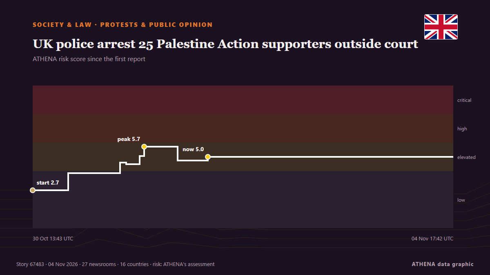

UK police arrest 25 Palestine Action supporters outside court

Defend Our Juries has staged the protest today in a call for the government to lift the terror ban on the proscribed group. de Evening Standard (London)
Informado de forma independiente por 27 medios de 16 países desde el 30 oct; el primero fue Evening Standard (London); la cobertura sigue extendiéndose. ATHENA califica el riesgo como elevado (5.2/10), sobre todo por la gravedad del daño descrito y su alcance geográfico y sectorial. La confianza es del 91 % (alta): lo corroboran 27 medios independientes, con una fiabilidad media de las fuentes del 77 %. Medios por país: Reino Unido (15), Estados Unidos (4), Israel (2). Cobertura: del 30 oct al 1 nov, 52 horas.
Por qué importa: Los cambios legales y de política modifican derechos, obligaciones y servicios públicos para las personas afectadas.
Qué ha cambiado: 3 informaciones nuevas de 3 redacciones en las 24 horas hasta el 4 nov.
Primer titular: Met Police issue arrest warning for 'mass' pro-Palestine Action protest outside US Embassy in London
Los titulares se muestran en inglés, tal como se publicaron.
De un vistazo
Seleccionado, puntuado y redactado por la metodología publicada de ATHENA. Ningún editor interviene en eventos concretos. Cómo se elabora ›
| 30 Oct 13:11 UTC | 1 |
|---|---|
| 30 Oct 19:11 UTC | 1 |
| 31 Oct 01:11 UTC | 1 |
| 31 Oct 07:11 UTC | 1 |
| 31 Oct 13:11 UTC | 16 |
| 31 Oct 19:11 UTC | 7 |
| 01 Nov 01:11 UTC | 0 |
| 01 Nov 07:11 UTC | 10 |
| 01 Nov 13:11 UTC | 5 |
| 01 Nov 19:11 UTC | 0 |
| 02 Nov 01:11 UTC | 1 |
| 02 Nov 07:11 UTC | 0 |
| 02 Nov 13:11 UTC | 0 |
| 02 Nov 19:11 UTC | 0 |
| 03 Nov 01:11 UTC | 0 |
| 03 Nov 07:11 UTC | 0 |
| 03 Nov 13:11 UTC | 0 |
| 03 Nov 19:11 UTC | 0 |
| 04 Nov 01:11 UTC | 0 |
| 04 Nov 07:11 UTC | 0 |
| 04 Nov 13:11 UTC | 3 |
| 30 Oct 13:43 UTC | 2.7 |
|---|---|
| 31 Oct 00:09 UTC | 3.9 |
| 31 Oct 15:25 UTC | 4.6 |
| 31 Oct 17:16 UTC | 4.5 |
| 31 Oct 21:18 UTC | 5.1 |
| 31 Oct 22:35 UTC | 5.7 |
| 01 Nov 08:29 UTC | 4.8 |
| 01 Nov 17:24 UTC | 5.0 |
| 04 Nov 17:42 UTC | 5.2 |
Por qué estas cifras
Importancia
Riesgo
Confianza
La cobertura: quién informó y cuándo
titular tal como se publicó · abre el original- Evening Standard (London) · Reino UnidoMet Police issue arrest warning for 'mass' pro-Palestine Action protest outside US Embassy in London
- The Jerusalem Post · IsraelUK police warn of arrests ahead of Palestine Action protest at US Embassy
- Middle East Eye · INTAnyone attending, organising Palestine Action protest will be arrested, Metropolitan Police warns
- Evening Standard (London) · Reino UnidoLondon protest LIVE: Dozens arrested at pro-Palestine Action demo outside US Embassy
- The Guardian · Reino UnidoAlmost 140 arrested at protest against Palestine Action ban outside US embassy in London
- The Irish News (Belfast) · Reino UnidoDemonstration supporting Palestine Action takes place in Edinburgh
- Belfast Telegraph · Reino UnidoDemonstration supporting Palestine Action takes place in Edinburgh
- The Herald (Scotland) · Reino UnidoDemonstration supporting Palestine Action takes place in Edinburgh
- The Irish News (Belfast) · Reino UnidoDozens arrested outside US embassy after showing support for Palestine Action
- Belfast Telegraph · Reino UnidoDozens arrested outside US embassy after showing support for Palestine Action
- Arab News · Arabia SaudíDozens arrested outside London’s US Embassy at Palestine Action protest
- Middle East Eye · INTLondon police arrest dozens days before Supreme Court hearing on Palestine Action ban
- The Canadian Press (via CityNews) · CanadáLondon police arrest 139 people outside US Embassy for supporting banned pro-Palestinian group
- Al-Monitor · Estados UnidosUK police arrest Palestine Action supporters ahead of Supreme Court hearing
- Anadolu Agency (English) · TurquíaUK police arrest 48 at protest supporting proscribed Palestine Action
- TASS (English) · RusiaPalestine Action supporters stage protest outside US Embassy in London
- CBS News (World) · Estados UnidosPro-Palestinian protesters arrested outside U.S. Embassy in London
- Al Jazeera English · CatarLondon police arrest 139 as hundreds protest Palestine Action ban
- ABC News (International) · Estados UnidosDozens arrested outside US Embassy in London for supporting proscribed pro-Palestinian group
- Evening Standard (London) · Reino UnidoMore than 300 people arrested at London protest at US Embassy supporting banned Palestine Action group
- Free Malaysia Today · MalasiaUK cops arrest Palestine Action supporters ahead of Supreme Court hearing
- Evening Standard (London) · Reino UnidoMore than 100 arrested outside US embassy after supporting Palestine Action
- Belfast Telegraph · Reino UnidoMore than 100 arrested outside US embassy after supporting Palestine Action
- Al Jazeera English · CatarPalestine Action supporters arrested outside US embassy in London
- TRT World · TurquíaBritish police arrest 139 Palestine Action activists ahead of Supreme Court appeal
- Middle East Eye · INTMargaret Owen, 94, arrested again during Palestine Action ban protest
- The Jerusalem Post · IsraelOver 130 arrested over Palestine Action terror designation protest outside US Embassy in London
- The New Arab · INTUK police arrest Palestine Action supporters ahead of hearing
- The New Arab · INTUK police say 325 people were arrested at Palestine Action demo
- Belfast Telegraph · Reino UnidoMore than 300 arrested outside US embassy after supporting Palestine Action
- Evening Standard (London) · Reino UnidoMore than 300 arrested outside US embassy after supporting Palestine Action
- Arab News · Arabia SaudíUK police say 325 people were arrested at Palestine Action demo
- The Herald (Scotland) · Reino UnidoNo arrests at Scottish Palestine Action protest as 325 cuffed in London
- Free Malaysia Today · MalasiaUK police say 325 people were arrested at Palestine Action demo
- Al-Monitor · Estados UnidosUK police say 325 people were arrested at Palestine Action demo
- The Straits Times · SingapurBritish police say 325 people were arrested at Palestine Action demo
- Channels TV · Nigeria325 People Arrested At Palestine Action Protest — UK Police
- People Daily · KeniaMore than 300 arrested at Palestine Action protest outside US embassy in London
- Times of India · IndiaOver 300 arrested at US Embassy in London during Palestine Action protests
- The Guardian · Reino UnidoPolice detain 325 people at pro-Palestine Action protest at US embassy in London